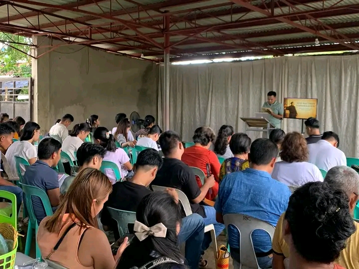
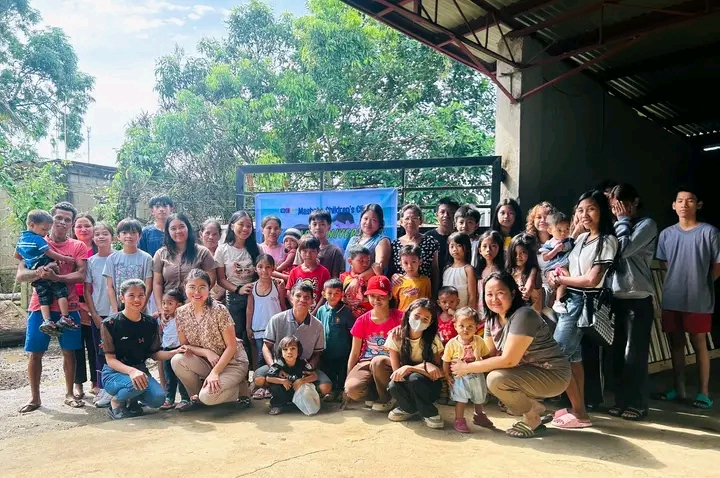

Please connect to the internet.
Pastor Samuel Apoya Remulin
Growing Together in Christ
Join us every Sunday for worship, prayer, and fellowship as we grow in faith together.
“For where two or three gather in my name, there am I with them.” — Matthew 18:20
“The Lord is my shepherd; I shall not want.” — Psalm 23:1
“Let your light shine before others, so that they may see your good works and give glory to your Father in heaven.” — Matthew 5:16
To be a Christ-centered church transforming lives through the Word of God.
To preach the Gospel, disciple believers, and serve the community with love and integrity.
Day: Every Sunday
Time: 9:00 AM – 11:00 AM
Venue: ALAS Baptist Church Worship Center, Alas, Mandaon, Masbate
Preacher: Pastor Samuel Apoya Remulin
Day: Every Saturday
Time: 6:00 PM – 8:00 PM
Venue: Cabitan Bible Study Center, Cabitan, Mandaon, Masbate
Preacher: Pastor Samuel Apoya Remulin
Date: February 28, 2026
Time: 3:00 PM Onward
Venue: Cabitan Bible Study Center, Cabitan, Mandaon, Masbate
Everyone is welcome to join us for fellowship and spiritual growth.
• Youth Ministry
• Music Ministry
• Prayer Ministry
• Outreach Ministry

Celebrating the 508th Church Reformation at Pastor Sam’s home, together with our brothers and sisters from Alas Baptist Church. Thank you Pastor Alex & Pastor Sam for faithfully preaching and reminding us about Reformation and pointing us back to the foundation of our faith. Scripture alone, Christ alone, Grace alone, faith alone and to God be the glory alone! Church reformed, always reforming according to the word of God.
Download
Masbate Children’s Clinic celebrates its anniversary with a heart for service. Grateful to Alas Baptist Church for welcoming our medical mission. Thank you, Terramedic Inc. and Intermed Pharma, for standing with us in caring for the children of Masbate.
DownloadSpeaker: Pastor Samuel Apoya Remulin
Pagpapatawad: Totoo ba Ang kasabihang "To forgive is to forget?"
DownloadSpeaker: Pastor Samuel Apoya Remulin
YHWH: Ang Dakilang Ama sa Langit
DownloadReflecting on putting Jesus at the center of our lives each day.
DownloadUnderstanding your identity in Christ and the promises God has for you.
DownloadLocation: Alas, Mandaon, Masbate
Phone: 09XXXXXXX
Email: alasbaptistchurch@email.com
{kind=link}
{kind=link}